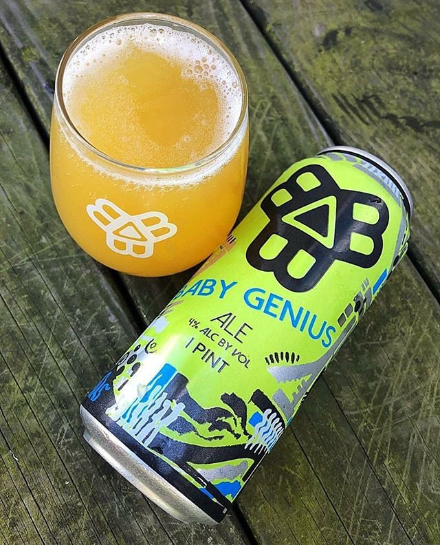

HOME
ALES
Baby Genius Blonde Ale
Bissell Brothers Brewing Co.
Their humble, guzzlable tribute to summer in Maine (i.e. Heaven). Hopped with equal parts Citra, Ella, and Topaz, and brewed in alliance with the Barbara Bush Children’s Hospital at Maine Medical Center, which receives 5% of its sales each year.
Located in Portland, ME, the Bissell Brothers was conceived in November 2011 by brothers Noah and Peter Bissell, in response to Noah’s homebrewing obsession, and Peter’s interest and burgeoning experience in entrepreneurship and marketing. Since then, They have continued to stay true to their mission to craft flavors and experiences that the people of Maine hadn’t had before, and serve them as fresh as possible, and now are able to share it on a national level too.
Check out their site HERE 